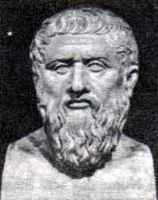

|

Texto de
Susana
Lopes de Alexandria

Riker
menciona o mito de Atlntida

|
Antes de a Enterprise descobrir que
Aldea realmente existe, escondido sob um sotifiscado sistema de
camuflagem, Riker compara o misterioso planeta a Atlntida,
a mitolgica ilha situada no Oceano Atlntico, a oeste do
Estreito de Gibraltar - um lugar utpico, que sucumbiu a um
terremoto, desaparecendo para sempre sob as guas.
 "Para alm daquelas que hoje se chamam colunas de Hrcules, acha-se um grande continente dito Posseidnis ou Atlntis...". Assim comea a narrativa sobre Atlntida em Timeu. As "colunas de Hrcules" so o Estreito de Gibraltar. Neste dilogo, Plato nos conta como sacerdotes egpcios, numa conversa com o legislador Slon, descrevem Atlntida como uma ilha maior do que a sia Menor e a Lbia juntas. Cerca de 9 mil anos antes do nascimento de Slon, afirmam os sacerdotes, Atlntida era uma ilha muito rica cujos poderosos prncipes conquistaram muitas terras no Mediterrneo at serem finalmente derrotados pelos atenienses e seus aliados. Os habitantes de Atlntida acabaram se transformando em pessoas mpias e ms, e sua ilha foi engolida pelo mar em conseqncia de um terremoto. Em Crton, Plato descreve com detalhes a histria da nao ideal de Atlntida. Atlntida provavelmente apenas uma lenda, uma histria inventada por Plato para ilustrar um argumento. Mas escritores europeus medievais, que conheceram a histria atravs de gegrafos rabes, acreditaram nela e tentaram identificar Atlntida com algum pas de verdade. Aps a Renascena, por exemplo, houve tentativas de identific-la com a Amrica, Escandinvia e as Ilhas Canrias. Calcula-se que mais de 25 mil livros foram escritos sobre o tema at hoje, havendo inclusive teorias segundo as quais os habitantes de Atlntida eram extraterrestres que se autodestruram com bombas atmicas. Ainda no foi encontrada uma evidncia
sequer que provasse a real existncia da ilha perdida, e por
enquanto a hiptese mais provvel a de que ela s existiu
realmente na imaginao do filsofo Plato. Quem sabe um dia
exploradores, a exemplo da Enterprise e sua descoberta de Aldea,
encontrem a prova definitiva de que a utpica ilha de Atlntida
um dia existiu. |